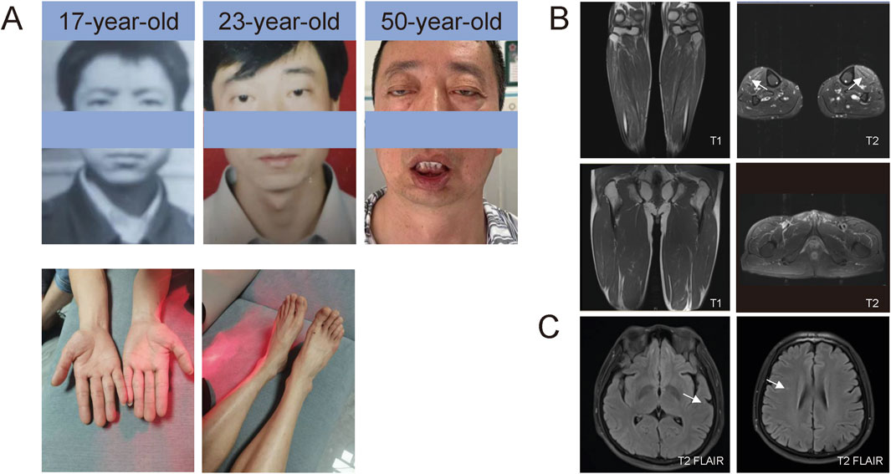
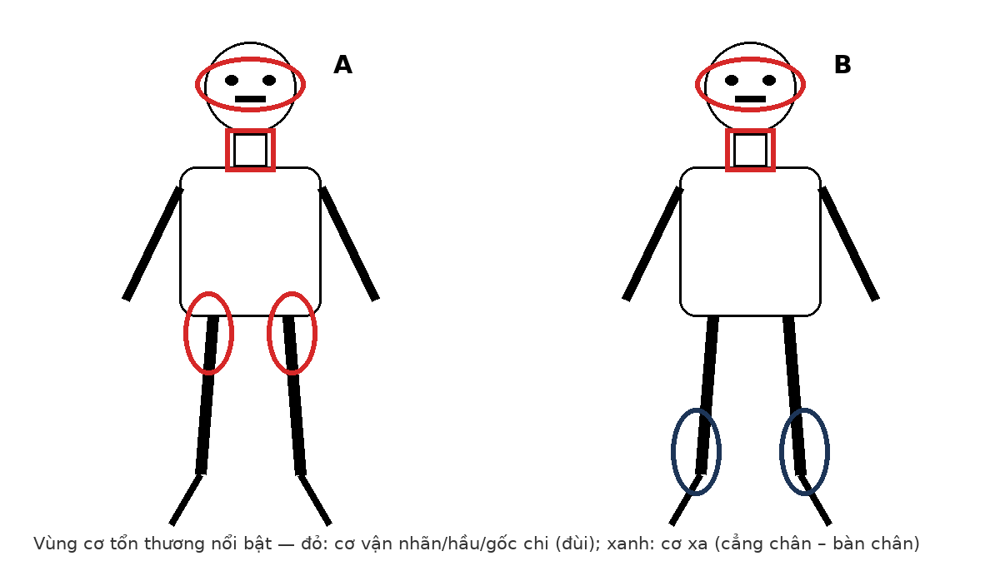

1641 — OPMD & OPDM so với CPEO: sụp mi – liệt nhãn cầu – nuốt khó, MRI cơ và DWI sọ / Oculopharyngeal muscular dystrophy (OPMD), oculopharyngodistal myopathy (OPDM) vs CPEO
Tags: pattern:sup-mi pattern:liet-nhan-cau pattern:nuot-kho pattern:teo-co pattern:thay-mo-co pattern:phu-co pattern:ngoai-tuy vung:ho-nao vung:co-van-nhan vung:chi-duoi vung:nao score:GCN-repeat score:Mercuri score:FNOP-spectrum protocol:MRI-co-chi protocol:RT-MRI-nuot protocol:videofluoroscopy protocol:QMUS anatomy:co-van-nhan
Mức chắc chắn (certainty): tổng hợp y văn (literature synthesis) — số liệu lấy từ tổng quan OPDM 2025 (PMC13142886), tổng quan OPMD 2026 (PMC13661686), đoàn hệ 102 người bệnh OPMD Israel (PMC13188457), ca OPDM4 mang 126 CGG (PMC11903759), 2 ca OPDM3 có bất thường DWI tiểu não (PMC11543384) và nghiên cứu 13 bệnh nhân OPMD chụp MRI thời gian thực + siêu âm cơ định lượng (PMC13140979). Chưa có ca nguyên văn do nhóm tự thu thập; mọi chỗ suy luận được ghi rõ.
Câu chốt: ba bệnh cùng có sụp mi + liệt nhãn cầu + nuốt khó, nhưng ổ yếu cơ khác nhau và hình ảnh khác nhau: (1) OPMD — khởi phát > 50 tuổi, yếu GỐC chi (80%), thanh quản hẹp do vòng cricopharyngeus (cricopharyngeal bar); (2) OPDM — khởi phát sớm hơn (~22 tuổi ở thể OPDM4), yếu NGỌN chi (77% OPDM1), MRI cẳng chân thay mỡ nhiều hơn đùi, có thể kèm DWI sáng viền vỏ–tủy và chất trắng; (3) CPEO/KSS — không yếu chi kiểu ngọn–gốc, nhưng có bệnh võng mạc sắc tố + block dẫn truyền tim. Sai lầm chết người: gọi “sụp mi + nuốt khó tuổi già” là tai biến mạch não rồi bỏ qua nguy cơ sặc – viêm phổi hít, hoặc điều trị viêm cơ khi MRI chỉ có thay mỡ không phù.
1. Tổng quan bệnh học – cơ chế hình ảnh
1.1. OPMD — bệnh chuỗi polyalanine của PABPN1, khởi phát muộn, ưu thế GỐC chi
- Gen – đột biến: OPMD do tăng số bộ ba GCN (GCG/GCA mã hóa alanine) ở exon 1 của PABPN1 (14q11.2). Alen bình thường ≤ 10 lần lặp; alen bệnh 11–18 lần. Kiểu (GCN)11 dị hợp có độ xuyên thấu giảm, còn đồng hợp (GCN)11 gây bệnh kiểu lặn — đây là lý do có ca “lẻ tẻ” không có tiền sử gia đình (PMC13142886, PMC13661686).
- Dịch tễ: ~1/100.000 ở người da trắng, nhưng 1/600 ở người Do Thái Bukhara (Israel) và 1/1.000 ở người Canada gốc Pháp; đảo Canary ≥ 5,65/100.000 (PMC13661686). Tiền sử gia đình + gốc dân tộc có giá trị hơn con số chung.
- Tuổi khởi phát (đoàn hệ 95 ca dị hợp 10/13, PMC13188457): nuốt khó 53,0 ± 8,3 tuổi, sụp mi 53,9 ± 7,2, yếu chi 57,9 ± 10,2; nữ khởi phát sớm hơn nam ~4 năm (48,9 ± 7,9 vs 52,6 ± 7,1; p = 0,02). Lúc khám (61,6 ± 10,7 tuổi): nuốt khó 96,8%, sụp mi 89,5%, yếu chi 58,9% (chủ yếu gấp/dạng háng).
- Mô bệnh – vì sao hình ảnh “mỡ” chứ không “phù”: thể vùi sợi ống 8,5 nm trong nhân cơ là dấu hiệu kinh điển; sợi cơ thoái hóa – tái sinh, vacuole viền (rimmed vacuoles), rồi thay bằng mô mỡ và xơ (PMC13142886, PMC13661686). Mỡ nội cơ cho T1W tăng tín hiệu (giàu proton mỡ, T1 ngắn) và T2W tăng nhẹ/trung gian, không ngấm thuốc, không tăng trên STIR; ngược lại phù cơ (viêm) làm T2/STIR sáng với T1 bình thường.
- Kiểu yếu cơ (chốt phân biệt với OPDM), 111 bệnh nhân trong nghiên cứu hình ảnh của Eura và cs. (43 OPDM1 + 6 OPDM2 + 5 OPDM3 + 57 OPMD): yếu ưu thế gốc chi ở 80% OPMD, chỉ 3,6% OPMD yếu ưu thế ngọn chi (PMC13142886).
1.2. OPDM — bệnh chuỗi CGG/CCG, khởi phát sớm hơn, ưu thế NGỌN chi
- 5 thể gen: LRP12 (OPDM1), GIPC1 (OPDM2), NOTCH2NLC (OPDM3), RILPL1 (OPDM4), LOC642361/NUTM2B-AS1 (OPDM5); tất cả là chuỗi lặp không mã hóa (CGG hoặc CCG) — khác hẳn cơ chế polyalanine của OPMD (PMC13142886).
- Dịch tễ – độ hiếm: đến 2019 chỉ có 14 báo cáo ca độc lập trong 42 năm; từ khi xác định gen, số ca tăng nhanh. OPDM3 mới có 4 ca chỉ điểm có tiền sử gia đình + 9 ca lẻ tẻ được công bố (PMC11543384).
- Tuổi khởi phát sớm hơn OPMD có ý nghĩa: trong 16 ca OPDM4 đã báo cáo, tuổi khởi phát trung bình 22,2 ± 7,0; ca chỉ điểm khởi phát 30 tuổi với 20 năm tiến triển (PMC11903759).
- Kiểu yếu cơ: ngọn chi 77% (OPDM1), 50% (OPDM2), 60% (OPDM3); hiếm khi ưu thế gốc chi (17% OPDM2) (PMC13142886). Ca OPDM4: yếu hầu 94% (15/16), yếu cơ mặt 94%, yếu ngọn chi 75% (12/16), mất khả năng đi lại 17% (1/6) (PMC11903759).
- MRI cơ — “cẳng chân nặng hơn đùi”: mỡ thay thế cẳng chân > đùi; các cơ bị nhất là tibialis anterior, extensor digitorum longus, đầu trong gastrocnemius, soleus; OPDM3 nặng nhất. So với OPMD: tibialis anterior + extensor digitorum longus bị nhiều hơn ở OPDM, còn adductor magnus bị nhiều hơn ở OPMD (PMC13142886). Ca OPDM4 còn có T2 tăng ở tibialis anterior gợi ý phù cơ trên nền thay mỡ (PMC11903759) — tức hai quá trình cùng tồn tại, không loại trừ nhau.
- CK thường bình thường: ca OPDM4 có CK 110 IU/L (giới hạn 25–192) dù teo cơ 20 năm (PMC11903759). CK bình thường không loại trừ bệnh cơ di truyền.
1.3. TẠI SAO OPDM3/NIID lại “sáng” trên DWI — và sáng ở đâu
- OPDM3 do NOTCH2NLC nằm trong phổ bệnh thể vùi trong nhân tế bào thần kinh (neuronal intranuclear inclusion disease — NIID); mô bệnh là thể vùi ưa eosin trong nhân ở hệ thần kinh trung ương, ngoại biên và da (PMC13142886, PMC11543384).
- Vị trí ưa thích trên MRI: viền vỏ–tủy (corticomedullary junction) là dấu hiệu đặc trưng trên DWI; ngoài ra cuống tiểu não giữa (middle cerebellar peduncles) và vùng cạnh giun (paravermal) tăng tín hiệu T2/FLAIR (PMC13142886). Hai ca OPDM3 mới báo cáo có DWI sáng ở tiểu não — trước đây chưa được mô tả (PMC11543384).
- TẠI SAO sáng DWI: tổn thương xốp bào (spongiform change) và phù nội bào làm giảm chuyển động phân tử nước trong mô → DWI tăng tín hiệu; khác nhồi máu ở chỗ không theo lãnh thổ mạch, không có tắc mạch lớn tương ứng, và tiến triển nhiều năm. Vì vậy không được chẩn đoán “nhồi máu cấp” chỉ vì DWI sáng — phải đối chiếu ADC, phân bố, mạch máu và bối cảnh.
- Vì sao da là cửa sổ chẩn đoán: thể vùi p62 dương tính có trong tuyến mồ hôi, tế bào mỡ, nguyên bào sợi ở OPDM1/2/3 (không có ở OPMD) → sinh thiết da là bước ít xâm lấn để xác nhận phổ NIID (PMC13142886).
1.4. TẠI SAO nuốt khó — “vòng” cricopharyngeus chứ không chỉ cơ hầu yếu
- Cơ hầu và cơ cricopharyngeus (phần dưới cơ khép hầu, chính là cơ thắt thực quản trên — UES) bị thoái hóa → giảm lực đẩy hầu + giãn không đủ UES; hậu quả là ứ đọng ở xoang lê, trào ngược lên mũi, sặc im lặng (PMC13140979, PMC13661686).
- Đo bằng MRI thời gian thực (25 khung/giây, lát 8 mm): thời gian vận chuyển miệng (oral transit time) ở OPMD dài hơn chứng 581,2 ms (KTC 95% 225,9–936,4; p = 0,002); cricopharyngeal bar gặp ở 53% OPMD (so với 80% ở viêm cơ thể vùi — IBM) (PMC13140979).
- Hệ quả lâm sàng: viêm phổi hít là biến chứng chính, bệnh hô hấp là nguyên nhân tử vong hàng đầu của OPMD (PMC13661686) — nên nuốt khó là chỉ định chụp/tầm soát, không phải triệu chứng phụ.
1.5. Bảng số liệu khoá (dùng để nhớ, không thay thế phần đọc ảnh)
| Đặc điểm | OPMD | OPDM | CPEO/KSS |
|---|---|---|---|
| Gen | PABPN1, GCN 11–18 | LRP12/GIPC1/NOTCH2NLC/RILPL1/LOC642361 | mtDNA (đa số mất đoạn lớn) |
| Tuổi khởi phát | ~53 tuổi (nuốt khó/sụp mi) | ~22 tuổi (OPDM4), sớm hơn OPMD | Trẻ–người trẻ |
| Ưu thế yếu chi | Gốc chi 80% | Ngọn chi 77% OPDM1 | Không kiểu ngọn–gốc; yếu cơ vận nhãn |
| Nuốt khó | 96,8% lúc khám | 94% (yếu hầu) | Ít gặp, thường muộn |
| MRI cơ | Adductor magnus nặng hơn | Cẳng chân > đùi; tibialis anterior/EDL nặng hơn | Teo cơ vận nhãn, ít mỡ chi |
| Não | Thường bình thường | DWI viền vỏ–tủy, T2/FLAIR MCP ở OPDM3; WMH nhẹ ở OPDM4 | Sợi U, thể cầu nhạt; không DWI viền vỏ–tủy |
| Tim | Không điển hình | Không điển hình | Block dẫn truyền (KSS) |
2. Mẫu hình + chẩn đoán phân biệt theo vị trí (gamut)
Mẫu hình chung: sụp mi hai bên, đối xứng + liệt nhãn cầu ngoài + nuốt khó, tiến triển nhiều năm, không đau, không rung giật, không sốt.
- Nhóm A — yếu cơ kiểu “ngọn chi + liệt nhãn cầu”:
- OPDM (mọi thể): khởi phát trẻ hơn, cẳng chân teo/mỡ, CK bình thường; OPDM3 có thể kèm sa sút nhận thức, mất điều hòa, rối loạn thần kinh thực vật (phổ NIID).
- Bệnh cơ thể vùi (IBM): không đối xứng, cơ tứ đầu đùi + cơ gấp ngón, cricopharyngeal bar 80%, CK bình thường/tăng nhẹ — dễ nhầm OPMD ở người già.
- Bệnh ty thể (CPEO/KSS): sụp mi + liệt nhãn cầu, nhưng yếu cơ gốc chi mức độ nhẹ, kèm bệnh võng mạc sắc tố, block tim, điếc, đái tháo đường.
- Nhóm B — yếu cơ kiểu “gốc chi + nuốt khó ở người > 50 tuổi”:
- OPMD (kinh điển), viêm đa cơ/viêm cơ thể vùi, bệnh cơ do thuốc (statin), suy giáp, bệnh cơ do rượu, hội chứng Cushing.
- Nhóm C — “chỉ nuốt khó ± sụp mi nhẹ”:
- Nhược cơ (myasthenia gravis): mỏi cơ tăng cuối ngày, không teo/thay mỡ, có u tuyến ức; không được bỏ qua vì điều trị hoàn toàn khác.
- Xơ cứng teo cơ một bên thể hành (bulbar ALS): rung giật bó cơ, giật lưỡi, tăng phản xạ, liệt nhãn cầu hiếm — nếu có liệt nhãn cầu rõ thì ít nghĩ ALS.
- Bệnh Kennedy (SBMA): thể hành + teo cơ chi + gynecomastia, di truyền X-linked lặn, chỉ nam.
- Nhóm D — nguyên nhân cấu trúc tại hầu – thực quản: túi Zenker, hẹp thực quản, u vùng hầu, di chứng xạ trị — nuốt khó không kèm sụp mi, cần nội soi/đo nuốt.
Ba câu hỏi định vị (dùng trước khi kê đơn chụp): (1) Yếu chi kiểu gốc hay ngọn? (2) Có liệt nhãn cầu thật không? (3) Có dấu hiệu thần kinh trung ương (sa sút nhận thức, mất điều hòa) không?
3. Bảng so sánh phân biệt (ma trận đối chiếu)
| Thực thể (entity) | Hình ảnh điển hình | Chốt vào (rule-in) | Chốt loại (rule-out) | Gợi ý xác nhận |
|---|---|---|---|---|
| OPMD | MRI đùi: mỡ thay adductor magnus, gốc chi; cẳng chân ít hơn; não thường bình thường | Khởi phát > 50 tuổi + yếu gốc chi 80% + tiền sử gia đình + nuốt khó 96,8% | Yếu ngọn chi rõ + cẳng chân nặng hơn đùi → nghĩ OPDM | PABPN1 GCN (PCR); videofluoroscopy tìm cricopharyngeal bar; PABPN1 hóa mô miễn dịch |
| OPDM (OPDM1–5) | MRI: cẳng chân > đùi, tibialis anterior/EDL nặng; T2 có thể tăng do phù; OPDM3: DWI viền vỏ–tủy, T2/FLAIR MCP | Khởi phát trẻ (~22 tuổi OPDM4) + yếu ngọn chi + cẳng chân teo/mỡ + CK bình thường | Không có thay mỡ cơ chi + block tim + bệnh võng mạc sắc tố → nghĩ CPEO/KSS | TP-PCR CGG/CCG (LRP12, GIPC1, NOTCH2NLC, RILPL1, LOC642361); sinh thiết da/mô cơ tìm thể vùi p62 |
| CPEO / KSS | Teo cơ vận nhãn lan tỏa trên MRI hốc mắt; não: T2/FLAIR sợi U dưới vỏ, thể cầu nhạt; có thể DWI sáng do phù độc tế bào | Sụp mi + liệt nhãn cầu + bệnh võng mạc sắc tố + block dẫn truyền; CK bình thường | Yếu ngọn chi tiến triển + thay mỡ cẳng chân → nghĩ OPDM | mtDNA (mất đoạn/lặp), ECG + Holter, OCT/ERG, lactate |
| IBM (viêm cơ thể vùi) | MRI: thay mỡ KHÔNG đối xứng cơ tứ đầu đùi, cơ gấp ngón; phù STIR ở giai đoạn hoạt động | Yếu gấp ngón tay + tứ đầu đùi không đối xứng + cricopharyngeal bar 80% + CK bình thường/tăng nhẹ | Sụp mi + liệt nhãn cầu rõ → hầu như không phải IBM | Sinh thiết cơ (vacuole viền, thể vùi), EMG |
| Nhược cơ | MRI cơ bình thường (không thay mỡ); CT ngực tìm u tuyến ức | Mỏi cơ tăng cuối ngày, hồi phục sau nghỉ; kháng thể AChR/MuSK | Teo cơ + thay mỡ trên MRI → bệnh cơ thực thể, không phải nhược cơ | Test edrophonium (thận trọng), EMG lặp kích thích, CT/MRI trung thất |
| Kennedy (SBMA) | Teo cơ thể hành + chi; gynecomastia; không thay mỡ kiểu OPDM | Nam + thể hành + teo cơ chi + gynecomastia + CK tăng | Nữ bệnh nhân → loại Kennedy | Số lặp CAG androgen receptor, testosteron, EMG |
| Nhồi máu/bệnh mạch nhỏ | DWI sáng THEO lãnh thổ mạch, có mạch máu lớn tắc/hẹp; tổn thương đột ngột | Khởi phát cấp tính + khớp lâm sàng lãnh thổ + tắc mạch trên MRA | Tiến triển nhiều năm, đối xứng, không theo lãnh thổ, DWI viền vỏ–tủy → không phải nhồi máu | MRA/CTA, siêu âm tim, theo dõi thời gian |
Dấu hiệu “đọc ảnh” cần nhớ:
- Viền vỏ–tủy (corticomedullary junction): dải tăng tín hiệu DWI uốn theo ranh giới vỏ–chất trắng, thường hai bên, không theo lãnh thổ mạch → OPDM3/NIID; đây là “chữ ký” hình ảnh của phổ bệnh thể vùi trong nhân (PMC13142886, PMC11543384).
- Cẳng chân > đùi: dấu hiệu phân biệt mạnh nhất giữa OPDM và OPMD trên MRI cơ; kèm tibialis anterior và EDL bị sớm (PMC13142886).
- Cricopharyngeal bar: hình “gờ” lồi vào lòng hầu ở mức UES khi nuốt; gặp 53% OPMD nhưng không đặc hiệu (IBM 80%, trào ngược, tuổi già) (PMC13140979).
- Thay mỡ không ngấm thuốc: khẳng định bệnh cơ mạn, loại viêm cơ hoạt động — nhưng không định lượng mức độ yếu (thay mỡ chỉ tương quan trung bình với sức cơ).
4. Protocol chụp + hệ phân độ
4.1. MRI sọ – hốc mắt (khi có sụp mi/liệt nhãn cầu)
- Chuỗi bắt buộc: T1W, T2W, FLAIR, DWI (b = 1.000) + ADC; hốc mắt thêm T1 fat-sat sau tiêm để đánh giá cơ vận nhãn/thần kinh thị.
- Lát mỏng hốc mắt ≤ 3 mm, trục ngang + đứng; không dùng gadolinium nếu chỉ tìm thay mỡ/thể tích cơ.
- Đọc có hệ thống: (1) cơ vận nhãn — teo/giảm thể tích? (2) chất trắng — có tổn thương đối xứng quanh não thất/sợi U? (3) DWI viền vỏ–tủy? (4) thân não/tiểu não — MCP, paravermal? (5) teo vỏ não mức độ nào.
4.2. MRI cơ chi (khi nghi bệnh cơ di truyền)
- Vị trí: đùi giữa và cẳng chân giữa, lát T1W trục 5–8 mm, thêm STIR/T2 fat-sat để tách mỡ (T1 sáng, STIR tối) với phù (T1 bình thường, STIR sáng).
- Phân độ thay mỡ Mercuri 0–4: 0 bình thường; 1 vài ổ rải rác; 2 < 50% diện tích cơ; **3** > 50%; 4 thay hoàn toàn. Ghi từng cơ (không ghi “teo lan tỏa”) để so sánh giữa các lần.
- Bẫy kỹ thuật: tư thế và mức lát khác nhau làm lệch phân độ; luôn so cùng độ cao giải phẫu khi theo dõi.
4.3. Đánh giá nuốt
- Videofluoroscopy (VFS) là chuẩn vàng chức năng: tìm ứ đọng xoang lê, tràn vào mũi, sặc im lặng, cricopharyngeal bar, đo thời gian vận chuyển.
- FEES (nội soi mềm) khi không chụp được; MRI thời gian thực (25 khung/giây, lát 8 mm, mặt phẳng đứng giữa) khi cần định lượng và không nhiễm xạ; siêu âm cơ định lượng (QMUS) đầu dò 8–14 MHz đo độ dày + độ xám cơ lưỡi/hàm (PMC13140979).
- Ngưỡng hành động: sặc/ứ đọng dai dẳng + sụt cân/viêm phổi tái diễn → hội chẩn nuốt, xét mở cơ cricopharyngeus. Số liệu 39 ca mở cơ ngoài niêm mạc: 25 ca hết triệu chứng, 10 ca cải thiện rõ, nhưng 12/35 ca đáp ứng bị tái phát sau trung bình 39 tháng (PMC13661686) — tư vấn trước mổ.
4.4. Sơ đồ quyết định (Mermaid)
flowchart TD
A["Sụp mi + liệt nhãn cầu + nuốt khó tiến triển"] --> B{"Yếu chi ưu thế nào?"}
B -->|"Gốc chi, khởi phát > 50 tuổi"| C["Nghĩ OPMD: PABPN1 GCN + VFS tìm cricopharyngeal bar"]
B -->|"Ngọn chi, khởi phát trẻ"| D["Nghĩ OPDM: MRI cẳng chân + TP-PCR CGG/CCG"]
B -->|"Không yếu chi, có block tim/bệnh võng mạc"| E["Nghĩ CPEO/KSS: mtDNA + ECG Holter + OCT"]
D --> F{"DWI sáng viền vỏ-tủy?"}
F -->|"Có"| G["Nghĩ OPDM3/NIID: sinh thiết da, đánh giá nhận thức"]
F -->|"Không"| H["OPDM1/2/4/5 theo gen"]
C --> I["Đánh giá nuốt: VFS hoặc FEES"]
I --> J{"Sặc/viêm phổi tái diễn?"}
J -->|"Có"| K["Hội chẩn nuốt, cân nhắc mở cricopharyngeus"]
J -->|"Không"| L["Theo dõi định kỳ + phòng hít"]
5. Biến thể bình thường và cạm bẫy
- Thay mỡ theo tuổi: người già có thể có mỡ rải rác đối xứng ở cơ cạnh cột sống/cẳng chân; khác OPDM ở chỗ không ưu thế tibialis anterior/EDL, không teo nhanh, không kèm yếu ngọn chi tiến triển.
- “Sụp mi + nuốt khó = tai biến mạch não”: bẫy hay gặp ở cấp cứu. Bệnh cơ di truyền tiến triển nhiều năm, đối xứng, không có liệt nửa người/thất ngôn; DWI không theo lãnh thổ.
- DWI sáng ≠ nhồi máu cấp: ở OPDM3/NIID, DWI sáng viền vỏ–tủy có thể tồn tại nhiều năm; nếu chỉ dựa DWI để cấp cứu/thuyên tắc sẽ sai. Luôn đọc ADC + MRA + bối cảnh.
- CK bình thường: 110 IU/L trong ca OPDM4 tiến triển 20 năm; đừng loại trừ bệnh cơ vì CK bình thường.
- Thay mỡ không phải viêm: không có phù/ngấm thuốc thì không dùng corticoid; điều trị oan gây loãng xương, tăng đường huyết và không cải thiện.
- Cricopharyngeal bar không đặc hiệu: gặp ở IBM (80%), trào ngược, sau xạ; không được coi là “chẩn đoán OPMD” nếu thiếu bối cảnh.
- Ảnh ca nặng không đại diện: ca OPDM4 có 126 CGG là thể rất nặng (mất khả năng đi lại 1/6); không suy ra mức độ nặng trung bình từ một ca.
- Bẫy di truyền: bố không triệu chứng mang > 200 CGG có thể sinh con bệnh nặng (hiện tượng “lẻ tẻ/giả lặn”) → tư vấn di truyền cần xét bố mẹ, không chỉ người bệnh (PMC11903759).
6. Tự lượng giá — Blind Quiz
Ca 1 — Nam 50 tuổi, sụp mi + nuốt khó + yếu chi NGỌN tiến triển 20 năm.

- Gợi ý lâm sàng: CK 110 IU/L; không đau cơ; em trai có triệu chứng tương tự; nuốt khó tăng dần, sặc khi uống nước.
- Câu hỏi: (1) Mô tả bất thường trên MRI cẳng chân và FLAIR sọ? (2) Ba chẩn đoán phân biệt? (3) Dấu hiệu nào chốt hướng OPDM thay vì OPMD?
Bấm để hiện đáp án (findings + chẩn đoán)
- Findings: (A) sụp mi hai bên tăng dần theo tuổi, teo cơ bàn tay/cẳng chân; (B) MRI T1 cẳng chân: thay mỡ ưu thế cẳng chân, đặc biệt tibialis anterior và extensor digitorum longus; T2 có tăng tín hiệu ở tibialis anterior gợi ý phù cơ trên nền thay mỡ; (C) T2/FLAIR sọ: tăng tín hiệu chất trắng nhẹ, không theo lãnh thổ mạch.
- Chẩn đoán: OPDM4 — 126 CGG ở RILPL1; khởi phát 30 tuổi, tiến triển 20 năm (PMC11903759).
- Vì sao: yếu NGỌN chi + cẳng chân nặng hơn đùi + CK bình thường tách khỏi OPMD (gốc chi, adductor magnus); không block tim, không bệnh võng mạc sắc tố tách khỏi CPEO/KSS; không đau, không phù lan tỏa/ngấm thuốc tách khỏi viêm cơ.
- Phản biện: ảnh là một ca thể nặng (126 CGG); thể nhẹ có thể chỉ có sụp mi + nuốt khó, MRI cơ gần bình thường — không loại trừ nếu ảnh âm tính.
- Nguồn ảnh: Frontiers in Genetics 2025, Fig. 1 — PMC11903759; CC BY 4.0; Wang W, Yin T, Zhang X, Wang Z, Wang T, Zhang S, Zhang Y, Fan D.
Ca 2 — Hai bệnh nhân cùng sụp mi + nuốt khó, phân bố cơ khác nhau.

- Gợi ý: A khởi phát 56 tuổi, yếu đùi khi đứng dậy; B khởi phát 24 tuổi, yếu cổ chân/bàn chân, đi lại khó.
- Câu hỏi: Mỗi hình gợi ý bệnh nào? Cần xét nghiệm gì để chốt?
Bấm để hiện đáp án
- A = OPMD: sụp mi + nuốt khó + yếu gốc chi (đùi); tuổi khởi phát > 50. Xác nhận: PABPN1 GCN + videofluoroscopy (cricopharyngeal bar).
- B = OPDM: sụp mi + nuốt khó + yếu ngọn chi (cẳng chân – bàn chân); khởi phát trẻ. Xác nhận: MRI cẳng chân (thay mỡ ưu thế TA/EDL) + TP-PCR CGG/CCG; nếu có sa sút nhận thức/mất điều hòa → tìm DWI viền vỏ–tủy (OPDM3/NIID).
- Cơ chế: cả hai đều là bệnh cơ di truyền có thay mỡ, nhưng protein/chuỗi lặp và nhóm cơ đích khác nhau quyết định kiểu phân bố.
- Nguồn ảnh: sơ đồ tự vẽ, CC0 (không phải ảnh bệnh nhân).
Bài liên quan chéo
- 498 – Kearns–Sayre & CPEO — thể ty thể của cùng mẫu hình sụp mi/liệt nhãn cầu, có block dẫn truyền tim.
- 477 – Bệnh ty thể có biểu hiện thị giác & tai — DWI/MRS và các thể MELAS/MIDD/POLG.
- 421 – Lồi mắt Graves — chẩn đoán phân biệt cơ vận nhãn to nhưng chừa gân, không phải bệnh cơ di truyền.
- 1704 – Viêm tai giữa mạn & cholesteatoma ở trẻ có cấy ốc tai — bối cảnh nuốt khó/sặc và biến chứng hô hấp ở trẻ có bệnh tai mũi họng.
- 1642 – Sa tạng chậu tái phát sau colpocleisis — bài cùng đợt, minh họa di chứng muộn của phẫu thuật bịt.
Ảnh
images/1641_opdm-ptosis-mri_MRI_PMC11903759-F1.jpg— Fig. 1, Frontiers in Genetics 2025, PMC11903759, CC BY 4.0.images/1641_so-do-phan-bo-co.png— sơ đồ tự vẽ, CC0.- Chi tiết nguồn/giấy phép từng ảnh:
images/CREDITS.md.
Không dùng để chẩn đoán độc lập khi chưa có người hướng dẫn.